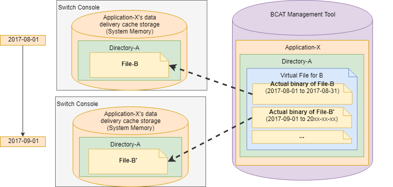

Data Delivery
This section describes the overview, initial settings, and operation procedure for the data structure required for delivering data.
In this document, the directories and files that are delivered in BCAT data delivery are collectively called data.
Preventing Incorrect Delivery
We strongly recommend that you take the following steps to ensure that there are no errors in the content or delivery timing for data.
- Register the data in the development environment (dd1 server environment).
- Perform delivery in the development environment or test delivery, and check the content of the data on the development hardware.
- Get the retail version of the application.
- Register the data in the production environment (lp1 server environment).
- Test-deliver the data in the production environment and check the content of the data using the production hardware.
- Deliver the data in the production environment and check the content of the data using the production hardware.
To get the retail version of the application, you must submit the master ROM for the application and it must pass Lotcheck.
The data must be registered in the Lotcheck environment (sd1 and sp1 server environments) during master submission.
Data Structure
Programs for applications that support BCAT data delivery recognize data in the path format of "file B that is under directory A." The application treats paths and files as having a one-to-one correspondence.
On the other hand, file B may be overwritten by a new file B' at a certain point. For this reason, the BCAT Management Tool treats paths and actual files as if they have a one-to-one correspondence.
The BCAT Management Tool provides a virtual file system to manage file B and file B' together.
Actual file instances are associated with and managed by virtual files. Virtual files are associated with at least one actual file so that delivery periods do not overlap.

Initial Setup
Perform initial setup as follows.
- Log in to the BCAT Management Tool as a user with the Manager role for the target application.
- From the menu, select Data Delivery.
- Select the target application for the process.
- From the menu, select Manage BCAT Usage Requests.
- Click the Get and Apply BCAT Usage Request button.
When this process is complete, the data delivery menu is displayed in the BCAT Management Tool.
The size of the data delivery cache storage that was applied for in OMAS is also shown in the BCAT Management Tool.
You can only get usage requests when the application phase in OMAS is In development or later.
If the application content in OMAS is updated, synchronize the data again after the request is approved by Nintendo (after the phase has changed).
Adding Data
Use the following procedure to add data.
If this procedure is performed in the production environment, the data is delivered to all target Switch systems in the production environment.
See the Preventing Incorrect Delivery section and check the content of the data in the development environment beforehand.
In addition, also perform test delivery in the production environment before the data delivery start date and time or before approving pre-delivery review for the data.
Step 1: Creating Directories
- To display the list of directories, from the BCAT Management Tool menu, select Manage Data Delivery.
- Click the Add New Directory button to create a new directory.
As soon as a directory is created, it is listed in the application by the nn::bcat::EnumerateDeliveryCacheDirectory() function.
The directory is listed even if it is empty.
Step 2: Adding Files
- Select the directory name.
- Click the New button to create a file.
The created file will be called the virtual file for convenience.
The filename you specify will be the filename recognized by the application.
The virtual file is not yet saved at this point. - Select the file to upload to the server.
This file will be called the binary for convenience. - Set the appropriate delivery start date and time and delivery end date and time for the binary.
- Click the Add delivery file button to add multiple binaries.
Repeat the process in steps 3 and 4 for each binary.
For binaries with a delivery start date set far in the future, you can leave the entry for the delivery end date blank. - Click the Add button to upload the binary to the server.
This completes the process of adding the virtual file and binary.
There is a time lag of approximately ten minutes between starting delivery and the time when data can actually be downloaded on a Switch system.
When performing delivery linked to a particular event, we recommend either starting delivery earlier than the announced delivery date and time, or not announcing the exact date and time of delivery.
- In cases such as the following, we recommend specifications that deliver the data itself in advance (for example, 12 hours prior or 1 day prior) and unlock the data at the specified time.
- The start time for the event is clearly determined.
- When the event starts, you want as many users as possible to have identical data.
- When the data is obtained differs for each user. Avoid an implementation like the following.
- Delivering data 10 minutes before the event's start time, in consideration of a 10-minute time lag from delivery to before the data can be received.
- Set delivery periods for all of the binary files under the virtual file so that their delivery start and end dates and times do not overlap.
If the delivery periods for the binaries overlap, the user will be notified in the subsequent procedure that delivery has not been approved.
Step 3: Review
Perform the following procedures for the pre-delivery review request and approval.
- Click the Request Pre-Delivery Review button for each binary.
- Click the Approve Pre-Delivery Review button for each binary. Note that to perform this operation you must have the role of Reviewer or higher.
This step completes the procedure. The data is delivered at the delivery start date and time.
When the binaries are to be delivered in the production environment for an application sold in China, in addition to step 3, Tencent performs a review of each binary.
After the procedures in step 3 have been completed, a notification message is sent to Tencent from the BCAT Management Tool.
The data is not delivered until the review has been approved.
Updating Data
Update created virtual files using the following procedure.
- To display the list of directories, from the BCAT Management Tool menu, select Manage Data Delivery.
- Select the name of the directory for which virtual files exist.
- Click the Details button for the virtual file.
The following steps are described for each type of update content.
Stopping Delivery of Undelivered Binaries
If the pre-delivery review for the binary has not yet been approved, click the Cancel Pre-Delivery Review button.
If the pre-delivery review for the binary has been approved, click the Cancel Approval and Revise Content button.
You can then perform the following operations as needed.
- Replace the binary (re-upload).
- Revise the delivery start date and time and delivery end date and time.
Stopping Delivery of Delivered Binaries
There are two operations for stopping the delivery of the binary.
| Operation | Description | Roles That Can Perform the Operation |
|---|---|---|
| Click the Expire button. |
Clicking this button ends the delivery of the binary. |
Users with the role of Reviewer or higher can perform this operation. |
| Set a delivery end date and time. | Delivery ends at the set date and time. |
There are restrictions on which roles can perform this operation, depending on the status of the binary.
Prior to the July 2021 update, users with the Editor role were also able to perform this operation on binaries when the status was anywhere from Draft to Publishing, but that has now changed. |
With this specification, users with the Editor role cannot directly change the delivery end date and time for binaries that have progressed to Publishing status.
If the delivery end date and time must be changed for a binary that has advanced to Publishing status, have this handled by a user with the role of Reviewer or higher.
If a new binary is added under a delivered binary that is not set with a delivery end date and time, the delivery start date and time for the new binary is automatically set as the delivery end date and time of the delivered binary when the pre-delivery review of the new binary is approved. In situations where the old binary is immediately replaced by the new binary, it might not be necessary to directly change the delivery end date and time.
Adding a New Binary
- Click the Add button for a binary that has already been added.
- If the delivery start date and time for the new binary is after the time for the selected binary, click the Add after button. Conversely, if the delivery start date and time is before the time for the selected binary, click the Add before button.
- Select the file to upload to the server.
- Set the appropriate delivery start date and time and the delivery end date and time.
- Click the Update button.
- Then perform the same operations as those in step 3 of Adding Data.
Deleting Data
Use the following steps to delete data. The process is described for each deletion target.
Deleting Virtual Files
Virtual files can only be deleted if the status of all binaries under the virtual file is Expired or Draft.
Use the following procedure to delete virtual files.
- Change the status using one of the following methods based on the status of the binary.
- Click the Expire button to change the status to Expired.
- Click the Cancel Pre-Delivery Review, Reject Pre-Delivery Review, or Cancel Approval and Revise Content button to change the status to Draft.
- Use the browser to reload the page.
- Click the Delete button on the upper right of the page.
If a virtual file does not contain any binary files that are being delivered, that virtual file is not recognized by the application.
For this reason, that virtual file does not need to be deleted when data delivery is stopped for the application.
Deleting Directories
Directories can only be deleted if the status of all binaries under all virtual files in the directory is Expired or Draft.
For more information about changing the status of the binaries as needed, see the previous section Deleting Virtual Files.
Use the following procedure to delete directories.
- In the directory list screen, click the Details button.
- Click the Delete button.
When Directory Changes Are Applied
Even when directories are created or deleted, those changes are not immediately applied on the Switch. Changes are applied to the Switch at either of the following times.
- When background synchronization is performed as a result of starting (or ending) delivery of the next binary after a directory is created or deleted.
- When there is immediate synchronization of the application approximately ten minutes after a directory is created or deleted.
CONFIDENTIAL